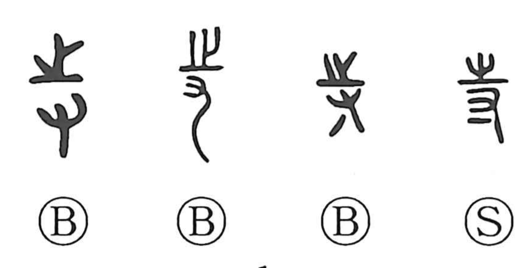

寺

Kun: tera | On: ji
buddhist temple ・ government office (historical) ・ eunuch (archaic)
Explanation
寺 is a phono‑semantic character. In early forms the upper element 之—originally a footprint—serves as the phonetic that signals the on reading, while the lower 寸 depicts a hand at the fingertips, the act of putting the hand to something. Together they convey the idea of holding, and 寺 first functioned as the original graph for 持 “to hold.” In the court sphere it then came to designate an attendant at the palace, especially a eunuch, and by extension a government office, a sense reflected in later usage. The bureau called Honglusi, which received foreign envoys, was eventually turned into lodgings for monks; from that institutional shift, 寺 naturally settled into its familiar meaning of a Buddhist temple.